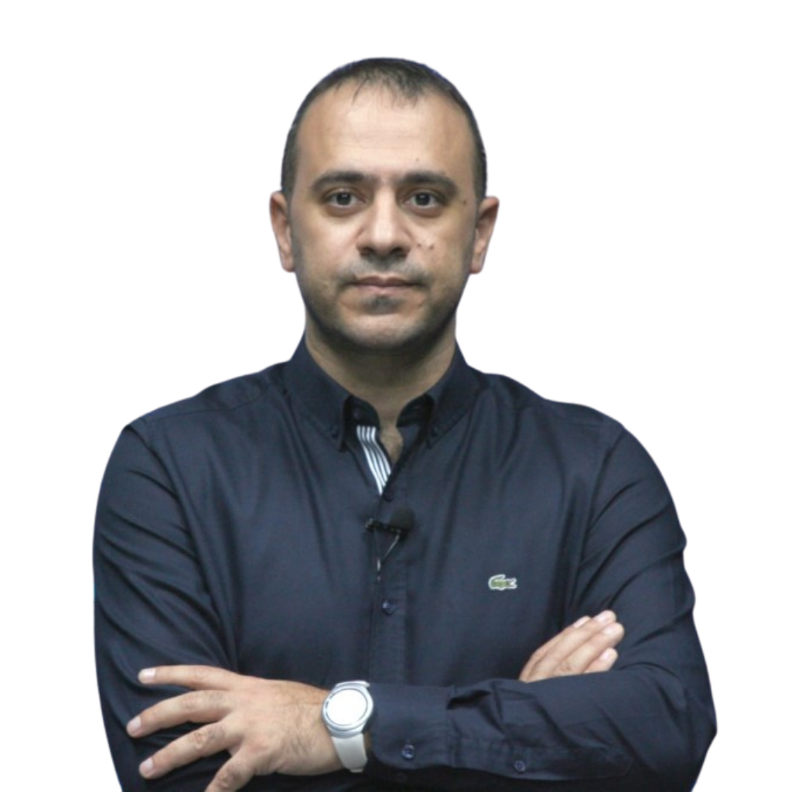
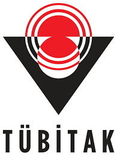

2025-2026 Eğitim Öğretim Yılı Bahar Dönemi Yüksek Lisans Ara Sınav Takvimi
Bölüm sitesinde yayımlanan güncel sınav takvimi duyurusu.
Yazılım Mühendisliği Bölümü, yazılım geliştirme, sistem analizi ve inovatif teknolojiler üzerine eğitim vererek nitelikli yazılım mühendisleri yetiştiren bir birimdir.
Bölümümüze ait güncel duyurular ve haberler.
Bölüm sitesinde yayımlanan güncel sınav takvimi duyurusu.
Bahar dönemi ara sınavlarına ilişkin güncellenen resmi duyuru.
Yüksek lisans ders programı için bölüm duyurusu.
Lisans ders programına ilişkin resmi bilgilendirme.

Bölüm sitesinde yayımlanan güncel haber başlığı.
Bölümümüz öğretim üyesi Dr. Zafer CÖMERT profesörlük unvanı almıştır.
Bölüm akademik kadrosuna katılım haberi.

Bölümümüz öğrenci projelerine ilişkin haberler.